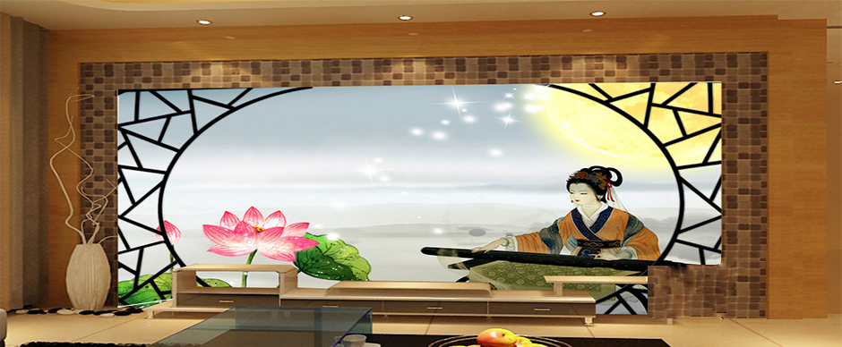

汉族音乐
汉族是有音乐传统的民族，汉族音乐有悠久的历史和独特的创造。秦以前，汉族先民已创造了乐器和乐曲，发明了乐律。汉唐盛世，汉族音乐以歌舞音乐见长；宋元以后，则以戏曲音乐为主。当今世界公认的音乐律制，如五度相生律（汉族称三分损益律）、纯律及平均律，汉族皆独立发明，其成果如车条之辐辏，汇入世界音乐理论之轴心。先秦乐器，以磬和钟最有特色。磬用石磨制而成，钟用青铜铸造而成，有钮钟、甬钟、钲等形式。磬有特磬（单磬）与编磬（组磬），钟亦有特钟（单钟），各悬于木架上，用木槌击之发声。又有琴、瑟，传说为伏羲氏发明，以桐木作体，绳丝为弦，瑟弦数25，琴弦数10或5。秦人损瑟弦之半，造为秦筝，流传至今。
朝代音乐
先秦乐器，以磬和钟最有特色。磬用石磨制而成，钟用青铜铸造而成，有钮钟、甬钟、钲等形式。磬有特磬（单磬）与编磬（组磬），钟亦有特钟（单钟），各悬于木架上，用木槌击之发声。又有琴、瑟，传说为伏羲氏发明，以桐木作体，绳丝为弦，瑟弦数25，琴弦数10或5。秦人损瑟弦之半，造为秦筝，流传至今。又有筑，是用竹尺敲击发音的弦乐器。青铜乐器还有商代铜鼓（湖北崇阳出土）、铎、铙、铃为击乐器。又有埙，用陶土烧制而成，吹奏乐器还有排箫、笙、笛等。 乐律的制定，传说在黄帝之世，传说不可尽信。但至公元前7世纪，汉族已制定乐律，其计算乐律的“三分损益法” 载于《管子·地员篇》。音乐家们还认为，三分损益制定乐津，实行应依弦长而非依管长。古乐以五声音阶为主，周代出现七声音阶（加变宫、变徵相当于47），战国时已有旋宫的理论，调式运用也很普遍。
吹奏乐器
笙木叶、纸片、招军(汉族) 、口笛(汉族) 、箫（北箫、南箫）(汉族) 、尺八 、笛（传统笛、加键笛、新笛）(汉族) 、排笛(汉族) 、竹筒哨(汉族) 、排箫(汉族) 、篪(汉族) 、埙(汉族) 、唢呐（传统唢呐、加键唢呐）(汉族) 、管子(汉族) 、双管(汉族) 、喉管（传统喉管、加键喉管）(汉族) 、笙（传统笙、加键高音笙、
弹拨乐器
琴琵琶(汉族) 、阮(汉族) 、月琴(汉族) 、秦琴(汉族) 、柳琴(汉族) 、三弦(汉族) 、筝（转调筝、新筝、蝶式筝、多弦制筝）(汉族) 、古琴(汉族)、竖箜篌、雁柱箜篌、双清、扬琴（律吕扬琴、变码扬琴）.三弦(汉族) 、筝（转调筝、新筝、蝶式筝、多弦制筝）(汉族)三弦(汉族) 、筝（转调筝、新筝、蝶式筝、多弦制筝）(汉族)
打击乐器
鼓梆子(汉族) 、梨花片(汉族) 、编磬(汉族) 、钹(汉族) 、锣(汉族) 、云锣(汉族) 、十面锣(汉族) 、星(汉族)——碰钟 、钟(汉族) 、编钟(汉族) 、连厢棍(汉族) 、唤头(汉族) 、惊闺(汉族) 、板(汉族) 、木鱼(汉族) 、吾攵(汉族) 、花盆鼓(汉族) 、渔鼓(汉族) 、京堂鼓(汉族) 、腰鼓(汉族) 、拨浪鼓(汉族) 、扬琴(汉族.
拉弦乐器
胡二胡(汉族) 、高胡(汉族) 、京胡(汉族) 、三胡(汉族) 、四胡(汉族) 、板胡(汉族) 、坠琴(汉族) 、坠胡(汉族) 、奚琴(汉族) 、椰胡(汉族) 、擂琴(汉族) 、二弦(汉族) 、大筒(汉族) 、轧筝(汉族)。.板胡(汉族) 、坠琴(汉族) 、坠胡(汉族) 、奚琴(汉族) 、椰胡(汉族) 、擂琴(汉族) 、二弦(汉族) 、大筒(汉族) 、轧筝(汉族)。.